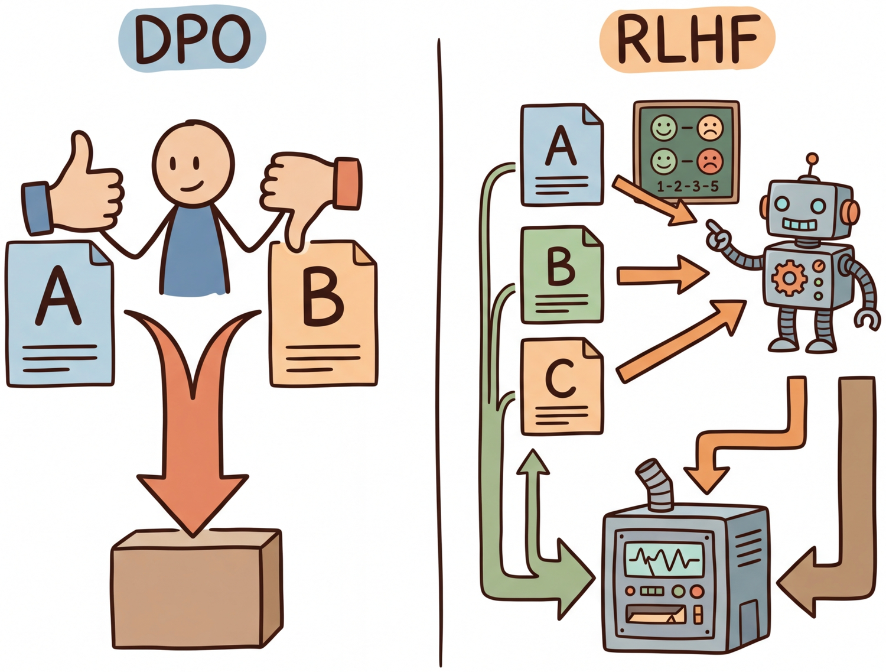

Your language model is secretly a reward model. You just need the right loss function to reveal it.
Reward AI Agent

Prerequisites
Before starting, make sure you are familiar with alignment overview as covered in Section 16.1: RLHF: Reinforcement Learning from Human Feedback.
DPO achieves RLHF-level alignment without reinforcement learning. The key insight is mathematical: the optimal policy under the RLHF objective has a closed-form relationship with the reward function. This can be implemented efficiently using parameter-efficient methods like LoRA. This means you can reparameterize the reward model loss directly in terms of the policy, training the language model on preference pairs using a simple classification-like objective. No reward model, no PPO, no value network. Building on the RLHF pipeline from Section 16.1, this dramatically simplifies the alignment pipeline and has spawned an entire family of "direct alignment" methods (KTO, ORPO, SimPO, IPO) that each address different limitations of the original formulation.
1. The DPO Derivation
Direct Preference Optimization (Rafailov et al., 2023) begins with the same objective as RLHF: maximize expected reward while staying close to a reference policy. The standard RLHF objective is:
Think of DPO as running a continuous A/B taste test. Instead of training a separate judge (reward model) to score each dish, you directly show the chef two dishes and tell them which one the diners preferred. The chef adjusts their technique to produce more of the preferred dish and less of the rejected one. This eliminates the middleman (the reward model) and its potential biases, making the training pipeline simpler and more stable, though it requires more carefully curated preference data.
The optimal solution to this constrained optimization problem has a closed-form expression:
where Z(x) is the partition function that normalizes the distribution. The crucial step in DPO is rearranging this expression to solve for the reward in terms of the policy:
When we substitute this into the Bradley-Terry preference model, the partition function Z(x) cancels (since it appears in both the chosen and rejected terms), yielding the DPO loss:
Expanding this with full notation and variable definitions:
The DPO loss has an elegant interpretation: it pushes the policy to increase the log-probability of chosen responses (relative to the reference) while decreasing the log-probability of rejected responses. The reference model acts as an implicit anchor, playing the same role as the KL penalty in PPO. The β parameter controls how aggressively the policy deviates from the reference.
Who: Product team at an enterprise software company
Situation: The company's internal AI assistant needed to match the corporate communication style: professional, concise, and avoiding casual language or humor in customer-facing drafts.
Problem: RLHF was too complex for the small ML team (three engineers), requiring a separate reward model, PPO infrastructure, and careful hyperparameter tuning across multiple models.
Dilemma: SFT on style-matched examples improved tone but introduced regressions in factual accuracy; the model learned surface patterns without internalizing the preference structure.
Decision: They chose DPO because it required only preference pairs (no reward model), reducing the pipeline from three models to one training loop.
How: The team collected 5,000 preference pairs where employees chose between two response drafts for the same prompt. They trained with beta=0.1 for 2 epochs using TRL's DPOTrainer.
Result: The DPO-aligned model achieved 87% preference win rate against the SFT baseline in blind evaluation, matching the quality of a comparable RLHF setup while requiring 60% less engineering effort and no reward model infrastructure.
Lesson: For teams without dedicated RL infrastructure, DPO delivers alignment quality comparable to RLHF with dramatically simpler implementation; the key investment is collecting high-quality preference pairs.
Figure 16.2.1 contrasts the RLHF and DPO pipelines, highlighting how DPO eliminates the reward model and PPO stages.
DPO (Direct Preference Optimization) eliminated the need for a separate reward model by baking preference learning directly into the language model's training loss. It is like cutting out the middleman in a supply chain: fewer moving parts, fewer things to break. Code Fragment 16.2.1 shows this approach in practice.
The following implementation (Code Fragment 16.2.1) shows this approach in practice.
# DPO Training with TRL
from trl import DPOTrainer, DPOConfig
from transformers import AutoModelForCausalLM, AutoTokenizer
from datasets import load_dataset
# Load SFT model as starting point
model = AutoModelForCausalLM.from_pretrained(
"./sft-llama-8b-final",
torch_dtype="bfloat16",
)
ref_model = AutoModelForCausalLM.from_pretrained(
"./sft-llama-8b-final",
torch_dtype="bfloat16",
)
tokenizer = AutoTokenizer.from_pretrained("./sft-llama-8b-final")
# Load preference dataset
# Must have: prompt, chosen, rejected columns
dataset = load_dataset("argilla/ultrafeedback-binarized-preferences", split="train")
print(f"Dataset size: {len(dataset)}")
print(f"Columns: {dataset.column_names}")
# prompt: the user query
# chosen: the preferred response
# rejected: the less-preferred response
# DPO training configuration
dpo_config = DPOConfig(
output_dir="./dpo-llama-8b",
beta=0.1, # KL penalty strength
per_device_train_batch_size=2,
gradient_accumulation_steps=16,
learning_rate=5e-7, # small LR for stability
num_train_epochs=1,
max_length=2048,
max_prompt_length=1024,
warmup_ratio=0.1,
logging_steps=10,
bf16=True,
loss_type="sigmoid", # standard DPO loss
# Advanced options
label_smoothing=0.0, # 0.1 can help with noisy preferences
precompute_ref_log_probs=True, # saves memory
)
trainer = DPOTrainer(
model=model,
ref_model=ref_model,
args=dpo_config,
train_dataset=dataset,
tokenizer=tokenizer, # use processing_class in TRL >= 0.14
)
trainer.train()
trainer.save_model("./dpo-llama-8b-final")2. DPO Variants and Extensions
The success of DPO inspired a wave of variants, each addressing specific limitations. It is worth noting that DPO does not universally match RLHF quality: on complex tasks requiring long outputs or nuanced reasoning, PPO-based RLHF can still outperform DPO, likely because the separate reward model provides a richer optimization signal. The core differences among DPO variants lie in data requirements, loss formulations, and training dynamics.
2.1 KTO: Kahneman-Tversky Optimization
KTO (Ethayarajh et al., 2024) addresses a practical limitation of DPO: the requirement for paired preferences. In real applications, feedback often comes as binary signals (thumbs up or thumbs down) rather than pairwise comparisons. KTO works with unpaired binary feedback, using ideas from prospect theory to weight losses and gains asymmetrically. Code Fragment 16.2.2 demonstrates KTO training with TRL.
# KTO Training with TRL
from trl import KTOTrainer, KTOConfig
# KTO uses unpaired binary data
# Each example has: prompt, completion, label (True/False)
kto_dataset = load_dataset("trl-lib/kto-mix-14k", split="train")
print(f"Example: {kto_dataset[0]}")
# {'prompt': '...', 'completion': '...', 'label': True}
kto_config = KTOConfig(
output_dir="./kto-llama-8b",
beta=0.1,
desirable_weight=1.0, # weight for positive examples
undesirable_weight=1.0, # weight for negative examples
per_device_train_batch_size=4,
gradient_accumulation_steps=8,
learning_rate=5e-7,
num_train_epochs=1,
max_length=2048,
bf16=True,
)
kto_trainer = KTOTrainer(
model=model,
ref_model=ref_model,
args=kto_config,
train_dataset=kto_dataset,
tokenizer=tokenizer,
)
kto_trainer.train()2.2 ORPO: Odds Ratio Preference Optimization
ORPO (Hong et al., 2024) eliminates the need for a separate reference model entirely. It combines the SFT objective with a preference optimization term in a single loss function. The key idea is to use the odds ratio of generating the chosen versus rejected response, contrasting them directly without a reference model baseline.
ORPO's main advantage is memory efficiency. By removing the reference model, ORPO requires only a single model in GPU memory during training, making it practical for alignment of very large models on limited hardware. The tradeoff is that without a reference anchor, the optimization can be less stable than DPO for some tasks.
2.3 SimPO: Simple Preference Optimization
SimPO (Meng et al., 2024) also removes the reference model but takes a different approach. Instead of using log-probability ratios, SimPO uses the average log-probability of the response (normalized by length) as the implicit reward. It adds a target margin γ to the objective, encouraging a minimum quality gap between preferred and rejected responses.
2.4 IPO: Identity Preference Optimization
IPO (Azar et al., 2024) addresses a theoretical issue with DPO: under certain conditions, DPO can overfit to preference data, driving the log-probability ratio to infinity. IPO uses a squared loss instead of the sigmoid loss, providing better regularization properties and more stable training.
| Method | Reference Model | Data Format | Key Advantage | Key Limitation |
|---|---|---|---|---|
| DPO | Required (frozen) | Pairwise (chosen/rejected) | Well-studied, strong baselines | Needs paired data + reference model |
| KTO | Required (frozen) | Binary (good/bad) | Works with unpaired feedback | Less data-efficient than pairwise |
| ORPO | Not needed | Pairwise (chosen/rejected) | Single model, combined SFT+alignment | Can be less stable |
| SimPO | Not needed | Pairwise (chosen/rejected) | Length-normalized, margin-based | Newer, less extensively validated |
| IPO | Required (frozen) | Pairwise (chosen/rejected) | Prevents overfitting, squared loss | May underfit with limited data |
3. Creating Preference Datasets
The quality of alignment training depends critically on the preference dataset. Creating high-quality preference data (using techniques from Section 12.2 on synthetic data pipelines) involves careful annotation design, quality control, and understanding of common pitfalls. Figure 16.2.2 outlines the preference data creation pipeline.
3.1 Annotation Best Practices
- Clear guidelines: Define specific criteria for what makes a response "better" (accuracy, helpfulness, safety, conciseness)
- Multiple annotators: Use at least 2-3 annotators per comparison to measure agreement
- Calibration: Include known-answer items to detect annotator drift
- Diversity: Ensure prompts span different tasks, difficulty levels, and domains
- Margin filtering: Remove pairs where responses are nearly identical in quality (low signal-to-noise)
4. Synthetic Preference Generation
Human annotation is expensive and slow. A growing trend is to generate synthetic preference data using a stronger model (such as GPT-4 or Claude) as the judge. This approach, sometimes called "AI feedback" or RLAIF (Section 16.3), can produce large preference datasets at a fraction of the cost of human annotation. Code Fragment 16.2.3 demonstrates this LLM-as-judge approach for building synthetic preference datasets.
# Synthetic preference generation with LLM-as-judge
import openai
from dataclasses import dataclass
from typing import List, Tuple
@dataclass
class PreferencePair:
prompt: str
chosen: str
rejected: str
judge_rationale: str
def generate_preference_pair(
prompt: str,
response_a: str,
response_b: str,
judge_model: str = "gpt-4o",
) -> PreferencePair:
"""Use a strong model to judge which response is better."""
judge_prompt = f"""Compare these two responses to the given prompt.
Evaluate on: accuracy, helpfulness, clarity, and safety.
Return JSON with "winner" (A or B) and "rationale".
Prompt: {prompt}
Response A: {response_a}
Response B: {response_b}"""
client = openai.OpenAI()
result = client.chat.completions.create(
model=judge_model,
messages=[{"role": "user", "content": judge_prompt}],
response_format={"type": "json_object"},
temperature=0.0,
)
judgment = eval(result.choices[0].message.content)
if judgment["winner"] == "A":
return PreferencePair(prompt, response_a, response_b, judgment["rationale"])
else:
return PreferencePair(prompt, response_b, response_a, judgment["rationale"])
def build_synthetic_dataset(
prompts: List[str],
model_name: str = "meta-llama/Llama-3.1-8B-Instruct",
samples_per_prompt: int = 4,
) -> List[PreferencePair]:
"""Build a preference dataset using rejection sampling + LLM judge."""
import itertools
pairs = []
for prompt in prompts:
# Generate multiple responses with different temperatures
responses = []
for temp in [0.3, 0.5, 0.7, 1.0]:
response = generate_response(model_name, prompt, temperature=temp)
responses.append(response)
# Create all pairwise comparisons
for a, b in itertools.combinations(responses, 2):
pair = generate_preference_pair(prompt, a, b)
pairs.append(pair)
return pairsSynthetic preferences inherit the biases of the judge model. If the judge systematically prefers verbose responses, the trained model will learn to be verbose. Always validate synthetic data against a held-out set of human preferences, and consider using multiple judge models to reduce individual model bias.
5. Practical Considerations for DPO Training
5.1 Hyperparameter Sensitivity
DPO training is sensitive to several key hyperparameters. The most important is β, which controls the strength of the implicit KL constraint. A β that is too low leads to aggressive optimization that can degrade coherence. A β that is too high produces minimal change from the SFT model. Code Fragment 16.2.4 provides recommended hyperparameter ranges for DPO training.
# Hyperparameter sweep for DPO
from dataclasses import dataclass
from typing import List, Dict
@dataclass
class DPOSweepConfig:
"""Configuration for DPO hyperparameter search."""
beta_values: List[float] = None
learning_rates: List[float] = None
warmup_ratios: List[float] = None
def __post_init__(self):
self.beta_values = self.beta_values or [0.05, 0.1, 0.2, 0.5]
self.learning_rates = self.learning_rates or [1e-7, 5e-7, 1e-6]
self.warmup_ratios = self.warmup_ratios or [0.05, 0.1]
def evaluate_dpo_run(
model_path: str,
eval_dataset,
metrics: List[str] = None,
) -> Dict[str, float]:
"""Evaluate a DPO checkpoint on standard metrics."""
metrics = metrics or ["win_rate", "coherence", "kl_divergence"]
results = {}
# Win rate: how often the model's output is preferred
# over the SFT baseline by an LLM judge
results["win_rate"] = compute_win_rate(model_path, eval_dataset)
# Coherence: perplexity on held-out text
results["coherence"] = compute_perplexity(model_path, eval_dataset)
# KL divergence from reference
results["kl_divergence"] = compute_kl(model_path, eval_dataset)
# Reward accuracy: agreement with held-out preferences
results["reward_accuracy"] = compute_reward_accuracy(
model_path, eval_dataset
)
return results
# Typical ranges for well-performing DPO
recommended_ranges = {
"beta": "0.1 to 0.5 (start with 0.1)",
"learning_rate": "1e-7 to 5e-6 (much lower than SFT)",
"epochs": "1 to 3 (more can overfit)",
"batch_size": "32 to 128 (larger is more stable)",
"warmup_ratio": "0.05 to 0.15",
"label_smoothing": "0.0 to 0.1 (helps with noisy data)",
}The single most important signal during DPO training is the implicit reward margin: the gap between the model's log-probability ratio for chosen versus rejected responses. If this margin grows steadily and plateaus, training is healthy. If it grows without bound, the model is overfitting. If it barely moves, β is too high or the learning rate is too low. Monitor this metric alongside validation loss.
When using DPO with LoRA (a common practical choice), set the LoRA rank higher than you would for SFT. DPO needs more capacity in the adapter to capture fine-grained preference distinctions. A rank of 64 to 128 is typical for DPO, compared to 8 to 32 for SFT.
6. Online and Iterative DPO
Standard DPO trains on a fixed, offline dataset of preference pairs. This creates a subtle but important limitation: the policy being optimized may drift into regions of the output space that the preference dataset does not cover, leading to uncertain or misleading reward signals. Online DPO and iterative DPO address this by generating fresh preference data from the model being trained, creating a tighter feedback loop between the policy and the preference signal.
6.1 Online DPO
In online DPO, the training loop alternates between generation and optimization. At each step, the current policy generates multiple candidate responses for a batch of prompts. These responses are then ranked (by a reward model, an LLM judge, or human annotators) to create fresh preference pairs. The DPO loss is computed on these on-policy pairs rather than stale offline data. This approach is more expensive per iteration but produces higher quality alignment because the preference signal always reflects the current model's behavior. Code Fragment 16.2.5 illustrates this online training loop.
# Online DPO conceptual loop
def online_dpo_step(policy, prompts, reward_model, beta=0.1):
"""One step of online DPO training."""
# Step 1: Generate candidate responses from current policy
candidates = []
for prompt in prompts:
responses = policy.generate(prompt, num_return_sequences=4)
candidates.append((prompt, responses))
# Step 2: Score responses with reward model
preference_pairs = []
for prompt, responses in candidates:
scores = [reward_model.score(prompt, r) for r in responses]
# Take best and worst as chosen/rejected
best_idx = scores.index(max(scores))
worst_idx = scores.index(min(scores))
preference_pairs.append({
"prompt": prompt,
"chosen": responses[best_idx],
"rejected": responses[worst_idx],
})
# Step 3: Compute DPO loss on fresh, on-policy data
loss = compute_dpo_loss(policy, preference_pairs, beta=beta)
return loss6.2 Iterative DPO
Iterative DPO takes a more practical middle ground. Instead of generating on-policy data at every gradient step (which is computationally expensive), it runs DPO in multiple rounds. After each round of DPO training, the improved model generates a new preference dataset, which is used for the next round. Typically three to five rounds are sufficient, with each round consisting of a standard offline DPO training run. Meta's Llama 3 training used iterative DPO (which they called "DPO with rejection sampling") to progressively improve alignment quality.
6.3 Mitigating Reward Model Overoptimization
A persistent challenge in preference optimization (whether RLHF or DPO) is reward overoptimization, also known as Goodhart's Law applied to language models. As the policy optimizes against a reward signal (explicit reward model or implicit DPO preferences), it eventually finds adversarial outputs that score highly on the reward metric but are actually low quality by human judgment. The model learns to exploit quirks in the reward signal rather than genuinely improving.
Several techniques mitigate this problem:
- KL penalty calibration: The β parameter in DPO controls how far the policy can drift from the reference model. Higher β values prevent overoptimization at the cost of slower improvement. Monitoring the KL divergence during training and stopping when it exceeds a threshold (typically 5 to 15 nats) provides an early warning signal.
- Reward model ensembles: Training multiple reward models on different data splits and averaging their scores makes it harder for the policy to exploit any single model's weaknesses. If the ensemble members disagree, the reward signal is unreliable and the policy should be penalized for that uncertainty.
- Length penalties: Models often discover that longer responses receive higher reward scores (a common bias in reward models trained on human preferences). Explicitly normalizing rewards by response length or adding a length penalty prevents this exploit.
- Periodic human evaluation: Automated metrics eventually become the target of optimization. Regularly sampling model outputs and evaluating them with human raters catches overoptimization that reward models miss. This is expensive but essential for high-stakes deployments.
- Conservative optimization (CPO/RPO): Variants like Conservative DPO add pessimistic reward estimates, training the model to be conservative when the reward signal is uncertain. This sacrifices some peak performance for robustness against overoptimization.
Reward overoptimization is not a theoretical concern; it appears reliably in practice. Models trained with DPO for too many epochs often produce verbose, sycophantic outputs that score highly on automated reward metrics but frustrate real users. The best defense is a combination of early stopping based on KL divergence monitoring, held-out human evaluation, and iterative training with fresh preference data.
📝 Section Quiz
Show Answer
Show Answer
Show Answer
Show Answer
Show Answer
DPO's core mathematical insight is that the optimal policy under a KL-constrained reward maximization objective has a closed-form relationship to the reward function: the reward is implicitly defined by the log-ratio of the policy to the reference model. This duality between reward functions and policies is an instance of a broader pattern in optimization known as Fenchel duality, where every constrained optimization problem has an equivalent dual formulation. By working in the "policy space" rather than the "reward space," DPO eliminates an entire stage of the training pipeline (reward model training) and the instabilities associated with RL optimization. This is analogous to how the Fourier transform converts convolution (a complex operation in the time domain) into multiplication (a simple operation in the frequency domain). The deeper lesson is that the same mathematical problem can look vastly different in different parameterizations, and finding the right parameterization can transform an intractable problem into a tractable one.
✅ Key Takeaways
- DPO reparameterizes the RLHF objective to train directly on preference pairs, eliminating the reward model and RL training loop.
- KTO extends the approach to binary (unpaired) feedback, making it practical when only thumbs up/down signals are available.
- ORPO and SimPO further simplify the pipeline by removing the reference model, halving GPU memory requirements.
- IPO addresses DPO's overfitting tendencies with a squared loss formulation that provides better regularization.
- Preference data quality is the most important factor in alignment quality. Invest in annotation guidelines, inter-annotator agreement, and diversity.
- Synthetic preferences from LLM judges can scale data creation but inherit judge biases. Always validate against human preferences.
DPO variants are rapidly expanding: IPO addresses overfitting to preference noise, KTO works with binary (good/bad) feedback instead of paired preferences, and ORPO eliminates the need for a separate reference model entirely. Research on online DPO (such as OAIF) generates preference pairs on the fly during training rather than using a static dataset, improving sample efficiency and reducing distribution mismatch. The open challenge is understanding when DPO fails relative to RLHF, since theoretical analysis suggests DPO may struggle with preferences that require reasoning about latent reward structure.
What's Next?
In the next section, Section 16.3: Constitutional AI & Self-Alignment, we examine Constitutional AI and self-alignment, where models learn to critique and improve their own outputs. The preference data formats used by DPO connect directly to the synthetic data generation principles in Section 12.1 and benefit from the data preparation workflows in Section 13.2.
The paper that changed alignment training by showing the RLHF objective can be reparameterized to eliminate the reward model and RL loop entirely. Essential reading for anyone working on preference-based alignment.
Introduces IPO (Identity Preference Optimization) and provides a unified theoretical framework for understanding DPO and its variants. Addresses DPO's overfitting issues with a more robust squared loss formulation.
Eliminates the need for paired preferences by using only binary good/bad labels per response. Based on Kahneman and Tversky's prospect theory, making it practical when paired comparison data is scarce.
Combines SFT and preference optimization into a single training stage, eliminating the reference model entirely. Reduces training complexity and memory requirements while maintaining competitive alignment quality.
Uses average log probability as a length-normalized, reference-free reward signal. Achieves state-of-the-art results with simpler implementation than DPO. A strong default choice for practitioners.
Tunstall, L., Beeching, E., Lambert, N., et al. (2023). Zephyr: Direct Distillation of LM Alignment.
Demonstrates the full pipeline of distilling alignment from a larger model using DPO on synthetic preferences. The Zephyr recipe became a standard template for open-source alignment work.